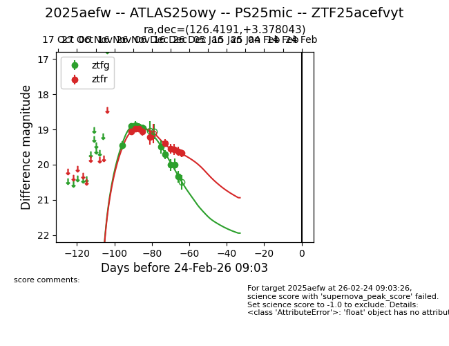
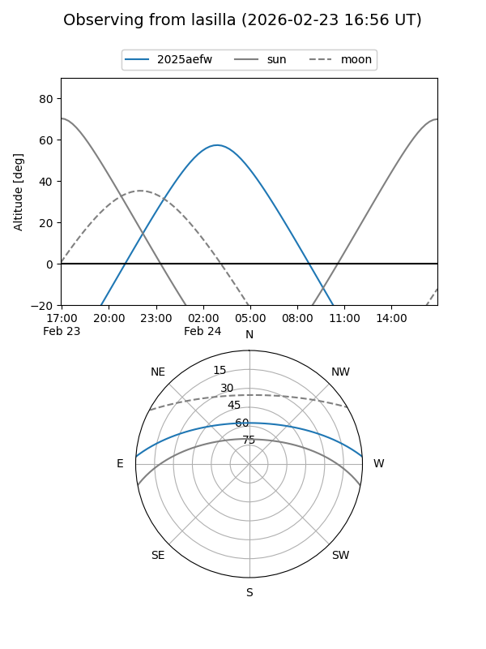
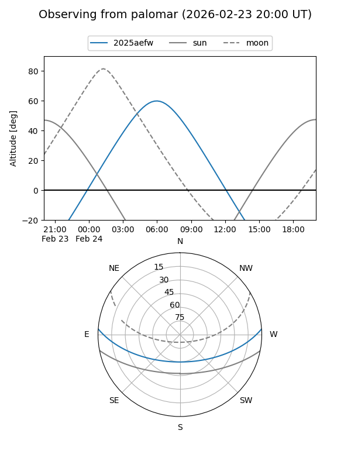
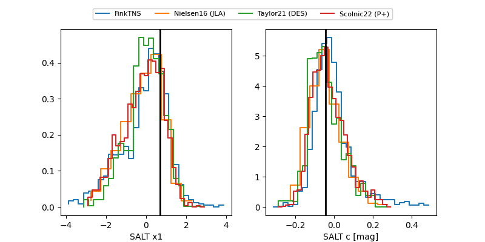

2025aefw
Target 2025aefw at 2025-12-31 17:00
Aliases and brokers:
FINK:
Lasair:
ALeRCE:
TNS:
YSE:
alt names
ZTF25acefvyt (ztf,fink_ztf)
2025aefw (tns,yse)
ATLAS25owy (atlas)
Coordinates:
equatorial (ra, dec) = 126.4191,+3.37804
equatorial (HMS+DMS) = 08:25:40.59,+03:22:40.95
galactic (l, b) = (220.9871,+22.45650)
Flags:
Photometry:
last atlasc=19.09, atlaso=19.06, ztfg=20.34, ztfr=19.67
1 atlasc, 2 atlaso, 10 ztfg, 10 ztfr detections
Lightcurve

Visibility


Additional plots
